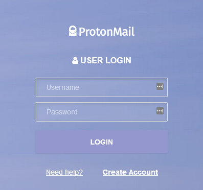

2FA

Quick Info
2FA stands for Two-Factor Authentication. At its most basic explanation, it adds an additional layer of security for any online account to which it is attached. This is done by way of an extra step in the login process, typically in the form of entering a special one-time numerical code.
 

This extra step can sometimes be annoying or frustrating, because it involves having to open an additional app and copy/paste a code, but trust me when I say having your account hacked because of insufficient security will be much, much worse. "No password will ever be impenetrable, and no online account can ever be fully secure. But password managers and two-factor authentication can get us as close as possible to that goal. And there's no reason not to use both for every account you have online."[1] Many services now offer push-based 2FA, where you simply approve a login request on your phone instead of entering a code. This makes the process quicker and more user-friendly while maintaining strong security.
The concept of 2FA has been around for quite a while. "When you use your credit card and you must enter in your ZIP code to confirm a charge, that's an example of 2FA in action. You must provide a physical factor, the card, and a knowledge factor, the ZIP code."[2]
Longer Explanation
To be clear, any 2FA is better than no 2FA. If you're only credentials for an online account are your username and password, it's simply a matter of time before that account gets hacked, if it hasn't been already. How does that happen?
- Data Breaches: If you've reused the same password across multiple accounts and a data breach occurs (which is becoming all too common nowadays), the attackers could use the same login credentials elsewhere.
- Keyloggers: "Keyloggers are malicious pieces of software that can run in the background, logging every key stroke you make. They're often used to capture sensitive data like credit card numbers, online banking passwords, and other account credentials. They then send this data to an attacker over the Internet."[3] To protect against keyloggers, always keep your software updated, use reputable antivirus programs, and avoid downloading files or clicking links from unknown sources. This software can get onto your system by way of malware. "Malware, a shortened combination of the words malicious and software, is a catch-all term for any sort of software designed with malicious intent."[4]
- Social Engineering: "Phishing is a commonly known form of social engineering - essentially, the attacker impersonates someone and asks for your password. Some users hand their passwords over readily."[5]
- Security Questions: Password resets by way of answering security questions (e.g., last four of social, birthplace, mother's maiden name, high school name). This is often publicly available information. Select security questions where the answers truly would only be known by you.
At a minimum, you should have 2FA enabled for all online financial accounts and your email account, though I recommend doing it for every account that offers it. Some services are moving toward passwordless authentication, which combines biometrics or security keys with 2FA for even stronger protection. While passwords remain common, these advancements may become the standard in the near future. That said, not all 2FA's are created equal. There are many different types. The one I recommend that is a nice balance of security and ease of use:
- Authenticator Application: This is an app that you install on your smart phone. Though there are several out there, I happen to use and recommend Authy. One reason I like it is because it can be synced across my smart phone, tablet, and desktop. It also offers encrypted recovery backups.
The "better than nothing" options are:
- Text Message (SMS) or Voice: A text message (or voice call) with a special code is sent to your phone. This is a less ideal option given that your messages could get intercepted. Security experts proved this vulnerability by hacking into a Gmail account set up with SMS 2FA: "By exploiting SS7 weaknesses they were able to intercept text messages containing those codes, allowing them to choose a new password and take control of the Gmail account."[6] Additionally, SMS-based 2FA is vulnerable to SIM-swapping attacks, where hackers take control of your phone number by tricking your carrier. This is why app-based or physical token authentication is strongly recommended over SMS.
- Email: An email is sent with a special code. This is a less ideal option because if your email account has been hacked than the hacker can more easily gain access to your other online accounts. If you must use email for 2FA codes, ensure your email account itself is protected with a strong password and app-based two-factor authentication.
If you want to take your security to the next level, than try this:
- Physical Token: This is referred to as U2F (Universal 2nd Factor). One example is YubiKey. It is a small, physical device (fits on your keychain) that plugs into your computer (USB) or sits near your smart device (NFC). Some physical tokens now support Bluetooth connectivity, making them compatible with more devices. YubiKey is one of the most popular options for robust hardware-based security. "Google has not had any of its 85,000+ employees successfully phished on their work-related accounts since early 2017, when it began requiring all employees to use physical Security Keys in place of passwords and one-time codes."[7]
Lastly, in addition to one of the above, you should always activate this when available:
- Biometric: Fingerprint, voice print, or face ID. This is a great option for smart phone logins and greatly simplifies the login process. However, it does not help when logging in on a computer. I would normally use biometrics on my phone, but not in place of an additional 2FA.
Best Practices for Using 2FA
To get the most out of two-factor authentication, follow these best practices:
- Always enable app-based or hardware token authentication when available.
- Keep backup codes in a secure location in case you lose access to your primary device.
- Regularly review which accounts have 2FA enabled and ensure no critical accounts are left unprotected.
- Be cautious about phishing attempts that try to trick you into providing your one-time codes.
- If using SMS-based authentication as a last resort, contact your carrier to add extra protections against SIM-swapping attacks.
How to Setup
Typically, within your online account security settings, there will be an option to enable two-factor authentication. Here are some walk-through examples:
When setting up two-factor authentication, most services will provide backup codes that can be used if you lose access to your primary device. Store these codes securely—preferably in an encrypted password manager—to ensure you can still access your account if needed.
Additional Articles
- Brian Krebs, "The New Rules of Two-Factor Authentication," Krebs on Security, July 2023.
- PCMag Editors, "The Best Two-Factor Authentication Apps," PCMag, December 2024.
- Proton Team, "Two-Factor Authentication Guide," Proton Blog, October 2024.
- Wired Editors, "How to Set Up Two-Factor Authentication," Wired, November 2023.
Footnotes
[1] Tim Herrera, "The Two Online Security Steps You Should Stop Putting Off," The New York Times, August 13, 2017.[2] Seth Rosenblatt, Jason Cipriani, "Two-factor authentication: What you need to know (FAQ)," CNET, June 15, 2015.
[3] Chris Hoffman, "How Attackers Actually "Hack Accounts" Online and How to Protect Yourself," How-To Geek, August 10, 2013.
[4] Tim Fisher, "What Is Malware and What Can It Do?," Lifewire, August 24, 2018.
[5] See footnote 3.
[6] Thomas Brewster, "All That's Needed To Hack Gmail And Rob Bitcoin: A Name And A Phone Number," Forbes, September 18, 2017.
[7] Brian Krebs, "Google: Security Keys Neutralized Employee Phishing," Krebs on Security, July 23, 2018.